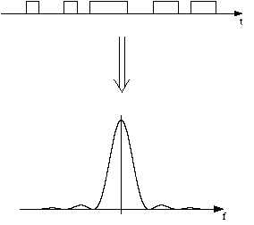
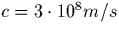

Thoriquement, et mme en pratique dans le cadre des essais en laboratoire, le signal obtenu dans les tapes prcdentes pourrait tre transmis tel quel par la voie des airs. Cependant, si l'on analyse le spectre (par transformation de Fourier) de ce signal numris "brut", on obtient, pour le module, une courbe en sinus cardinal au carr (cf figure 4.1) qui montre notamment que 90% de la puissance du signal se concentre dans des composantes dont les frquences s'talent entre 0 et Fmax=80kHz (en fait, de -Fmax +Fmax, mais les frquences ngatives n'ont pas de signification physique).

Aussi, il devient ncessaire de dplacer la zone occupe par les frquences
du signal transmis, et si possible de rduire au minimum la largeur de
cette zone. Lorsque l'on transmet un signal analogique, une des solutions
consiste moduler le signal initial avec un signal porteur, soit en
amplitude, soit en frquence (soit, aussi, par codage d'impulsions). Dans
notre cas, le signal transmettre tant numrique, il n'est constitu que
d'une srie de 0 et de 1, et l'on utilise alors une modulation de frquence
adapte, la F.S.K. (Frequency Shift Keying).
Dans notre cas, cette mthode, que nous allons ci-aprs expliciter plus en dtails, requiert que nous utilisions des signaux, une fois moduls, possdant des frquences de l'ordre de 1MHz. Or, la thorie (cf Annexe D) nous dit que l'mission travers les airs d'un tel signal ncessite une antenne d'une hauteur L donne par la relation 2L = c / (2f), o c exprime la vitesse de la lumire (

) et f la frquence du signal transmettre. On voit donc qu'une hauteur de 75cm serait suffisante pour transmettre un signal de frquence 100MHz, alors que pour une frquence de 1MHz, il faudrait une antenne de 75m de haut, ce qui est un peu gnant pour un radiotlphone! Aussi, il devient ncessaire de dcaler les frquences du signal transmettre, et c'est justement le rle de la transposition.